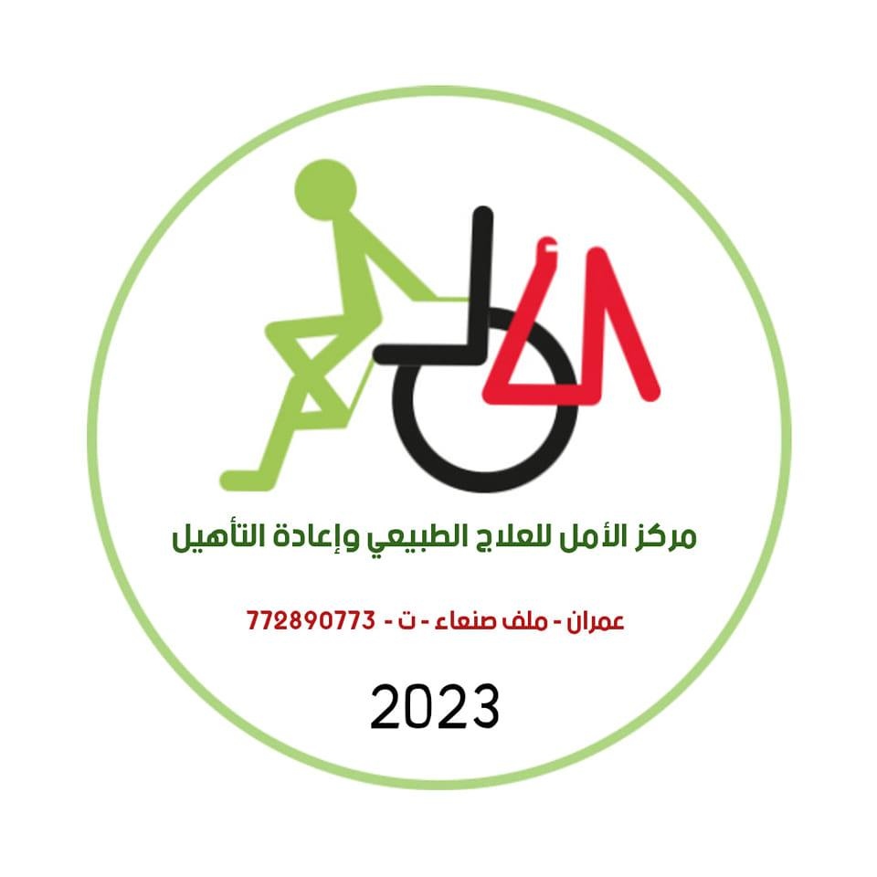
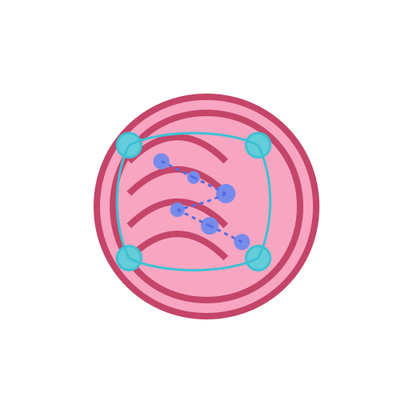

مركز الأمل للعلاج الطبيعي وإعادة التأهيل
الرئيسية
عن المركز
خدماتنا
علاج إصابات العظام
إعادة التأهيل الحركي
 علاج الجلطات
العلاج العصبي
العلاج الطبيعي للأطفال
العلاج اليدوي
الحجامة
العلاج بالإبر الصينية
العلاج بالإبر الجافة
برامج التوعية
معرض الصور
اتصل بنا
حجز موعد
خريطة الموقع
فوائد العلاج
خريطة الموقع
دليل شامل لجميع صفحات وخدمات مركز الأمل للعلاج الطبيعي وإعادة التأهيل
الهيكل التنظيمي للموقع
الصفحة الرئيسية
عن المركز
خدماتنا
علاج إصابات العظام
إعادة التأهيل الحركي
علاج الجلطات
العلاج العصبي
العلاج الطبيعي للأطفال
العلاج اليدوي
الحجامة
العلاج بالإبر الصينية
العلاج بالإبر الجافة
برامج التوعية
معرض الصور
اتصل بنا
حجز موعد
فوائد العلاج
الصفحة الرئيسية
الصفحة الرئيسية
نظرة عامة على الخدمات
نبذة عن المركز
آراء المرضى
معلومات الاتصال
عن المركز
عن المركز
ملف المركز
من نحن
قيمنا
نظرة عامة على الخدمات
مرافق وتجهيزات المركز
خدماتنا
جميع الخدمات
علاج إصابات العظام والمفاصل
إعادة التأهيل الحركي
علاج الجلطات
العلاج العصبي
العلاج الطبيعي للأطفال
العلاج اليدوي والتدليك العلاجي
الحجامة
العلاج بالإبر الصينية
العلاج بالإبر الجافة
برامج التوعية الخاصة بالإعاقة
معرض الصور
معرض الصور
صور المركز
جلسات العلاج
اتصل بنا
معلومات الاتصال
نموذج الاتصال
خريطة الموقع
حجز موعد
حجز موعد
نموذج الحجز
معلومات الحجز
فوائد العلاج
فوائد العلاج الطبيعي
فوائد علاج إصابات العظام
فوائد إعادة التأهيل الحركي
فوائد علاج الجلطات
فوائد العلاج العصبي
فوائد العلاج الطبيعي للأطفال
فوائد العلاج اليدوي
فوائد الحجامة
فوائد العلاج بالإبر الصينية
فوائد العلاج بالإبر الجافة
خريطة الموقع
خريطة الموقع
موقعنا
الحصول على الاتجاهات
معلومات الوصول